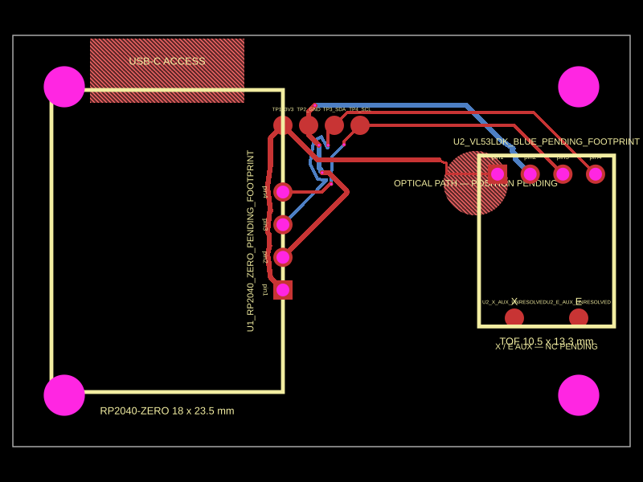
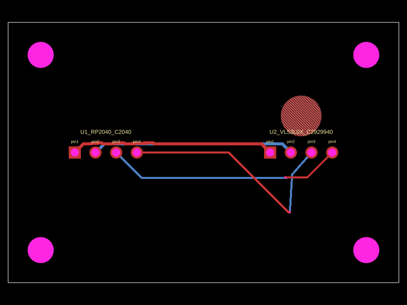
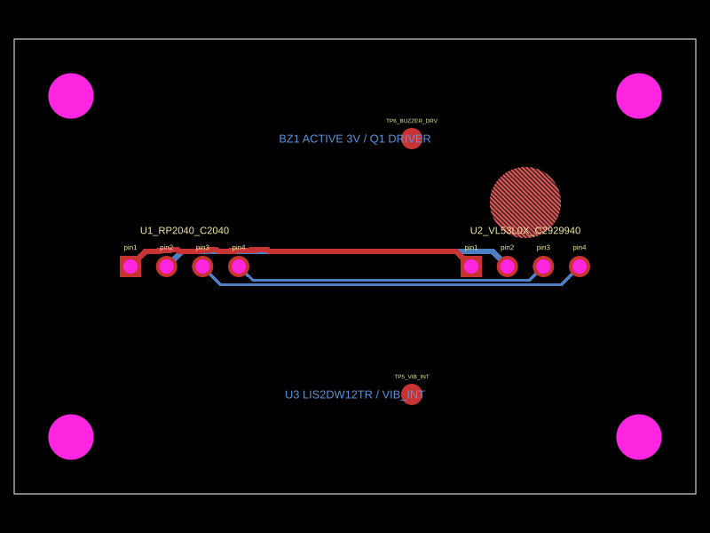
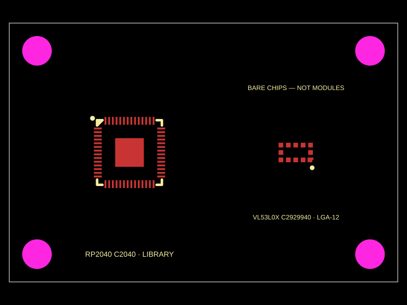
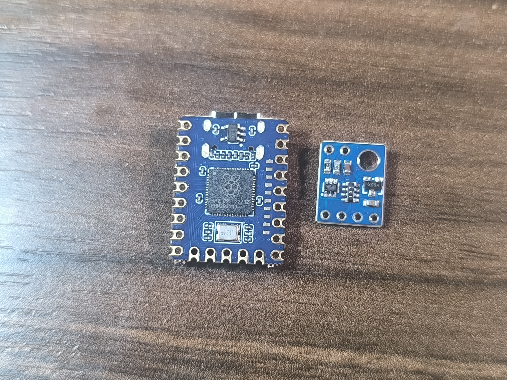

All PCB variants
Four real variants are shown below: A, B, C and D. Select a card for a larger render, or open its full PCB print directly.
The shared candidate-proof export is pipeline evidence, not a fifth board variant.
{kind=link}

{kind=link}

{kind=link}

{kind=link}
Library component preview
This is the library’s bare-chip geometry: RP2040 C2040 with 56 signal pads plus an exposed pad, and VL53L0X C2929940 with an LGA-12 footprint. It is intentionally separate from Variant A because these are not the received RP2040-Zero and GY-530 modules.

What is actually corrected?
The visible PCB changes are real in the source; the remaining items below are intentionally marked as provisional.
Variant A — implemented now
- Full 23-pad RP2040-Zero module contract.
- Four electrical ToF pads in order:
VIN,GND,SCL,SDA. - Two X/e features drawn as reference vias, not electrical pins or carrier-board holes.
- Named power/I2C routes, module outlines, optical keep-out and mounting geometry.
Still planned — not yet implemented
- 1:1 ToF outline, pad centres, hole and optical opening from caliper measurements.
- Measured VIN rail, regulator output and pull-up characterization.
- Shorter, deliberate two-layer routing and readable USB/BOOT/RESET legend.
- Complete collision assertions and qualified external electronics review.
Open the photo-to-render comparison


The generated render is an orientation aid, not a 1:1 fit approval. A ruler/caliper datum is required before freezing the footprint.
Evidence and electrical contract
Secondary detail is grouped here so the primary board comparison stays short.
Received hardware
| Module | Known | Open |
|---|---|---|
| RP2040-Zero | USB-C, GPIO pads, 5V/GND, BOOT/RESET | Exact revision, dimensions, I2C mapping |
| ToF breakout | VIN/GND/SCL/SDA, corner hole, optical package, X/e vias | Silicon, regulator, pull-ups, measured geometry |
Variant A candidate interface
| Signal | Candidate | Status |
|---|---|---|
| Power | RP2040 3V3 → ToF VIN/3V3 | Measure first |
| Ground | RP2040 GND ↔ ToF GND | Candidate |
| SDA | RP2040 GP4 → ToF SDA | Candidate |
| SCL | RP2040 GP5 → ToF SCL | Candidate |
Open the source-backed evidence notes
The received module is treated as a four-pin electrical interface. X/e are auxiliary plated vias and stay outside the carrier netlist. The marketplace VL53LDK/UL53LDK marking is not treated as proof of the silicon die or regulator output.
See the full evidence record, pin truth table and review documentation.
Review gates
These are the changes that must happen before Variant A can move toward fabrication.
01
Measure the boards. Capture calibrated outline, pad centres, pitch, hole datum, optical aperture, heights and USB access.
02
Characterize power. Verify VIN continuity, regulator output, pull-up rail and I2C voltage compatibility under load.
03
Rebuild A from facts. Replace provisional geometry, optical keep-out and access legend; keep X/e as vias only.
04
Improve routing. Re-place from measured datums and route short, inspectable two-layer paths with explicit endpoints and clearances.
05
Automate collision checks. Cover holes, pads, traces, keep-outs, silkscreen and board edges with negative overlap fixtures.
06
Get human sign-off. Send the complete package to a qualified electronics reviewer. No AI or green DRC result can replace this gate.
Open manufacturing and pipeline status
The local pipeline is reproducible and currently passes tests, TypeScript, candidate/variant proofs, validation, manifest generation and portal packaging. It reports zero candidate errors and four warnings. Manufacturing exports remain unverified in this Windows environment because the TS Circuit CLI path is blocked by a native Rollup application-policy error.
Decision: continue engineering; do not order or fabricate.
Cross-variant decision
The same page keeps the status of A, B, C and D visible without making them look equally mature.
| Variant | Decision now | Next required proof |
|---|---|---|
| A — received modules | Continue | Measured geometry, power characterization, routing and external review |
| B — chip-down | Compare only | Exact JLCPCB sources, footprints, orientation, assembly and routing |
| C — feedback | Compare only | Accelerometer/buzzer driver, current limits, interrupt and mechanics |
| D — wireless | Park | Restart with verified ESP32-C3 module or formally close the study |
Sources and working files
Advanced material is available when needed, without making the main page a wall of links.
Implementation status · 2026-09-02
All four candidates now use complete controller/sensor package geometry where a catalogue source exists. This status block is the authoritative cross-variant summary when older narrative notes describe the initial placeholder pass.
| Asset | Current proof | Still blocked by |
|---|---|---|
| A received modules | 23 RP2040-Zero pads, 4 ToF pads, X/e reference marks, hole, optical keep-out and four candidate routes | calibrated measurements, power characterization and review |
| B/C chip-down | RP2040 C2040 57 pads, VL53L0X C2929940 12 pads, complete review bodies | pin-level netlist, exact support sources and copper routing |
| C feedback | LIS2DW12TR C189624, 2-lead buzzer body and 3-pad low-side driver | driver/current/interrupt and acoustic review |
| D wireless | ESP32-C3 C2838502 61 pads, LIS2DW12TR and antenna keep-out | RF/power review, transport test and copper routing |
See the component/source register, asset map and generated verification report. Fabrication remains blocked.